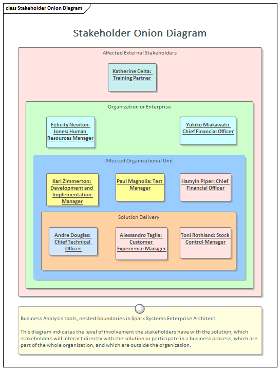
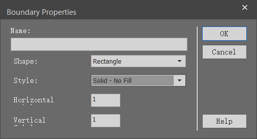

<!DOCTYPE html>
<html>
<head><meta name="generator" content="Hexo 3.8.0">
  <meta charset="utf-8">
  

  
  <title>了解边界（Boundary） | Enterprise Architect 用户指南（官方文档的粗译）</title>
  <meta name="viewport" content="width=device-width, initial-scale=1, maximum-scale=1">
  <meta name="description" content="什么是边界（Boundary）边界元素源自用例中的系统边界，但它可以广泛的用在其他地方，用来描述系统或系统中一部分的与其外部环境间的分离方式。可以将任意数量的边界添加到图表中，并且可以将其他元素（例如：用例，特征，需求，组件等）放置在边界内。可以改变边界的属性以显示组织成垂直和水平泳道的多个隔室。边界的边框样式和不透明度也可以设置。  什么地方可以找到边界UML Elements Toolbar">
<meta name="keywords" content="Enterprise Architect, EA, UML, 中文文档, 中文用户手册">
<meta property="og:type" content="article">
<meta property="og:title" content="了解边界（Boundary）">
<meta property="og:url" content="http://yoursite.com/guide-book/business-analysis-tools/boundary.html">
<meta property="og:site_name" content="Enterprise Architect 用户指南（官方文档的粗译）">
<meta property="og:description" content="什么是边界（Boundary）边界元素源自用例中的系统边界，但它可以广泛的用在其他地方，用来描述系统或系统中一部分的与其外部环境间的分离方式。可以将任意数量的边界添加到图表中，并且可以将其他元素（例如：用例，特征，需求，组件等）放置在边界内。可以改变边界的属性以显示组织成垂直和水平泳道的多个隔室。边界的边框样式和不透明度也可以设置。  什么地方可以找到边界UML Elements Toolbar">
<meta property="og:locale" content="default">
<meta property="og:image" content="http://yoursite.com/guide-book/business-analysis-tools/boundary/stakeholder-onion-diagram-6335.png">
<meta property="og:image" content="http://yoursite.com/guide-book/business-analysis-tools/boundary/boundary-properties.png">
<meta property="og:updated_time" content="2019-02-12T05:34:58.667Z">
<meta name="twitter:card" content="summary">
<meta name="twitter:title" content="了解边界（Boundary）">
<meta name="twitter:description" content="什么是边界（Boundary）边界元素源自用例中的系统边界，但它可以广泛的用在其他地方，用来描述系统或系统中一部分的与其外部环境间的分离方式。可以将任意数量的边界添加到图表中，并且可以将其他元素（例如：用例，特征，需求，组件等）放置在边界内。可以改变边界的属性以显示组织成垂直和水平泳道的多个隔室。边界的边框样式和不透明度也可以设置。  什么地方可以找到边界UML Elements Toolbar">
<meta name="twitter:image" content="http://yoursite.com/guide-book/business-analysis-tools/boundary/stakeholder-onion-diagram-6335.png">
  
    <link rel="alternate" href="/atom.xml" title="Enterprise Architect 用户指南（官方文档的粗译）" type="application/atom+xml">
  
  
    <link rel="icon" href="/favicon.png">
  
  
    <link href="//fonts.googleapis.com/css?family=Source+Code+Pro" rel="stylesheet" type="text/css">
  
  <link rel="stylesheet" href="/css/style.css">
</head>
</html>
<body>
  <div id="container">
    <div id="wrap">
      <header id="header">
  <div id="banner"></div>
  <div id="header-outer" class="outer">
    <div id="header-title" class="inner">
      <h1 id="logo-wrap">
        <a href="/" id="logo">Enterprise Architect 用户指南（官方文档的粗译）</a>
      </h1>
      
        <h2 id="subtitle-wrap">
          <a href="/" id="subtitle">Enterprise Architect（EA）官方用户手册的个人理解翻译版。</a>
        </h2>
      
    </div>
    <div id="header-inner" class="inner">
      <nav id="main-nav">
        <a id="main-nav-toggle" class="nav-icon"></a>
        
          <a class="main-nav-link" href="/">Home</a>
        
          <a class="main-nav-link" href="/archives">Archives</a>
        
      </nav>
      <nav id="sub-nav">
        
          <a id="nav-rss-link" class="nav-icon" href="/atom.xml" title="RSS Feed"></a>
        
        <a id="nav-search-btn" class="nav-icon" title="Search"></a>
      </nav>
      <div id="search-form-wrap">
        <form action="//google.com/search" method="get" accept-charset="UTF-8" class="search-form"><input type="search" name="q" class="search-form-input" placeholder="Search"><button type="submit" class="search-form-submit">&#xF002;</button><input type="hidden" name="sitesearch" value="http://yoursite.com"></form>
      </div>
    </div>
  </div>
</header>
      <div class="outer">
        <section id="main"><article id="post-guide-book/business-analysis-tools/boundary" class="article article-type-post" itemscope="" itemprop="blogPost">
  <div class="article-meta">
    <a href="/guide-book/business-analysis-tools/boundary.html" class="article-date">
  <time datetime="2019-02-06T16:00:00.000Z" itemprop="datePublished">2019-02-07</time>
</a>
    
  </div>
  <div class="article-inner">
    
    
      <header class="article-header">
        
  
    <h1 class="article-title" itemprop="name">
      了解边界（Boundary）
    </h1>
  

      </header>
    
    <div class="article-entry" itemprop="articleBody">
      
        <h1 id="什么是边界（Boundary）"><a href="#什么是边界（Boundary）" class="headerlink" title="什么是边界（Boundary）"></a>什么是边界（Boundary）</h1><p>边界元素源自用例中的系统边界，但它可以广泛的用在其他地方，用来描述系统或系统中一部分的与其外部环境间的分离方式。可以将任意数量的边界添加到图表中，并且可以将其他元素（例如：用例，特征，需求，组件等）放置在边界内。可以改变边界的属性以显示组织成垂直和水平泳道的多个隔室。边界的边框样式和不透明度也可以设置。</p>
<p></p>
<h1 id="什么地方可以找到边界"><a href="#什么地方可以找到边界" class="headerlink" title="什么地方可以找到边界"></a>什么地方可以找到边界</h1><p>UML Elements Toolbar | Boundary<br>Common Toolbox Page | Boundary</p>
<h1 id="边界的用法"><a href="#边界的用法" class="headerlink" title="边界的用法"></a>边界的用法</h1><p>边界元素对于定义系统内部（或系统的一部分）以及外部内容特别有用。它可用于显示系统或子系统的用例范围内的功能或要求。为管理和非技术受众创建的图表将受益于边界的使用，边界可以着色和嵌套，具有视觉吸引力和商业意义。它本质上是一个图解设备，所以不会出现在项目浏览器中。如果需要正式和结构化的元素分组，建模者可以考虑使用包。</p>
<h1 id="边界选项"><a href="#边界选项" class="headerlink" title="边界选项"></a>边界选项</h1><p>边界可以设置为有多个垂直和水平泳道，这对于将元素分组到边界的不同部分非常有用，从而创建矩阵效果。边框样式也可以配置为允许使用标准元素外观设置进行着色的不同线条样式。此外，选择“实心”选项可以设置边界的填充颜色。</p>
<p></p>

      
    </div>
    <footer class="article-footer">
      <a data-url="http://yoursite.com/guide-book/business-analysis-tools/boundary.html" data-id="cjs1cmux900018glhv42ahu7l" class="article-share-link">Share</a>
      
      
    </footer>
  </div>
  
    
<nav id="article-nav">
  
    <a href="/by-lcl/visio-block-diagram-in-enterprise-architect.html" id="article-nav-newer" class="article-nav-link-wrap">
      <strong class="article-nav-caption">Newer</strong>
      <div class="article-nav-title">
        
          在 Enterprise Architect 中画 Visio 的基本框图
        
      </div>
    </a>
  
  
</nav>

  
</article>

</section>
        
          <aside id="sidebar">
  
    

  
    

  
    
  
    
  <div class="widget-wrap">
    <h3 class="widget-title">Archives</h3>
    <div class="widget">
      <ul class="archive-list"><li class="archive-list-item"><a class="archive-list-link" href="/archives/2019/02/">February 2019</a></li></ul>
    </div>
  </div>


  
    
  <div class="widget-wrap">
    <h3 class="widget-title">Recent Posts</h3>
    <div class="widget">
      <ul>
        
          <li>
            <a href="/by-lcl/visio-block-diagram-in-enterprise-architect.html">在 Enterprise Architect 中画 Visio 的基本框图</a>
          </li>
        
          <li>
            <a href="/guide-book/business-analysis-tools/boundary.html">了解边界（Boundary）</a>
          </li>
        
      </ul>
    </div>
  </div>

  
</aside>
        
      </div>
      <footer id="footer">
  
  <div class="outer">
    <div id="footer-info" class="inner">
      &copy; 2019 李晨亮<br>
      Powered by <a href="http://hexo.io/" target="_blank">Hexo</a>
    </div>
  </div>
</footer>
    </div>
    <nav id="mobile-nav">
  
    <a href="/" class="mobile-nav-link">Home</a>
  
    <a href="/archives" class="mobile-nav-link">Archives</a>
  
</nav>
    

<!-- <script src="//ajax.googleapis.com/ajax/libs/jquery/2.0.3/jquery.min.js"></script> -->
<script src="https://code.jquery.com/jquery-2.2.4.min.js" integrity="sha256-BbhdlvQf/xTY9gja0Dq3HiwQF8LaCRTXxZKRutelT44=" crossorigin="anonymous"></script>


  <link rel="stylesheet" href="/fancybox/jquery.fancybox.css">
  <script src="/fancybox/jquery.fancybox.pack.js"></script>


<script src="/js/script.js"></script>


  </div>
</body>
</html>